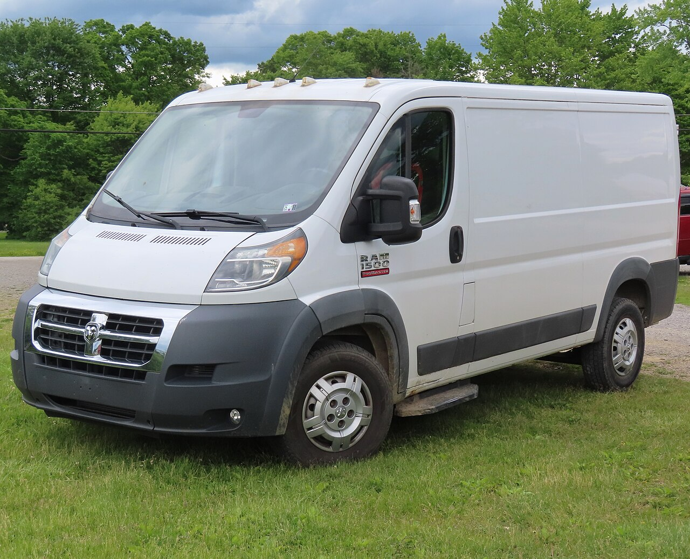

Each region starts with two close, sometimes incorrectly ordered appearance priors plus ISH. Every proposed label predicts where the other labeled parts should lie. Compatible arrangements reinforce recursively; incompatible arrangements inhibit one another.
Resolved component field

Select either held reference view. Boxes are normalized annotations; the displayed names are the strongest labels after convergence.
Demonstrated
Both fields converge deterministically.
Front-left improves from 4/9 to 9/9 labels.
Rear-left improves from 5/9 to 9/9 labels.
Left/right lights and front/rear wheels resolve through relationships despite misleading local priors.
ISH exists as a genuine competitor rather than a forced Boolean answer.
Not yet demonstrated
Automatic region proposal from pixels.
Generalization beyond these same two annotated views.
Robustness to occlusion, lighting, or model-year changes.
Discrimination from a Transit, Sprinter, Ducato, or ProMaster 2500.
A production vehicle detector.
Why one CAD source can become many views
A component-separated 3D model would let us render color, depth, normals, segmentation masks, and exact part identities from thousands of cameras. This checkpoint implements the downstream relaxation field now, so a future CAD renderer or ordinary feature detector can replace the frozen proposals without changing the relational engine.
The open community CAD link says “feel free to use it,” but supplies no formal redistribution license. It is recorded as a future import candidate, not copied into this repository. Ram’s official dimensional drawing is likewise cited but not redistributed because it is marked All Rights Reserved.
Sources and licensing
Both displayed photographs are by MercurySable99 and licensed CC BY-SA 4.0: front-left source and rear-left source. Engineering dimensions were cross-checked against Ram’s Body Builder’s Guide. Ram and ProMaster are trademarks of their respective owner; this independent research project is not affiliated with or endorsed by Ram or Stellantis.
Reproduce it
cd python
python3 -m vision_grrle.selftest
python3 -m vision_grrle.demo
# machine-readable result
cat vision_grrle/output/promaster_results.json
{kind=link}
{kind=link}